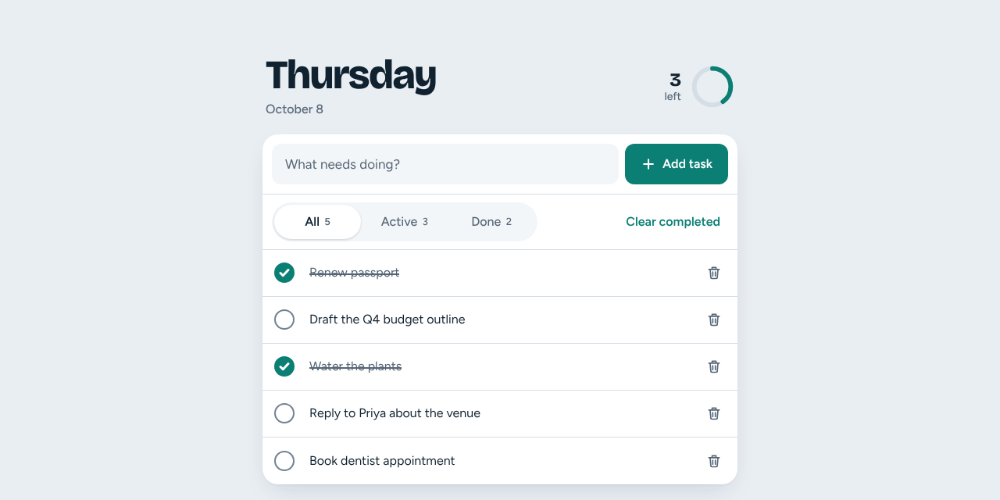

The language, read through code that passes Larastan level 8
/api/v1declare(strict_types=1) everywhere
declare(strict_types=1) buy you, and what does it not?"autoload": {
"psr-4": {
"App\\": "app/",
"Database\\Factories\\": "database/factories/",
"Database\\Seeders\\": "database/seeders/"
}
},
"autoload-dev": {
"psr-4": {
"Tests\\": "tests/"
}
}
App\Actions\Todos\CreateTodo must live at app/Actions/Todos/CreateTodo.phpcomposer.lock is committed, like a lockfile should beA scripting language with a per-request lifecycle, loaded by convention from the file system, with a NuGet-like package manager.Everything else is closer to C# than you expect.
<?php declare(strict_types=1); namespace App\Actions\Todos; use App\Models\Todo; use App\Repositories\TodoRepository;
"5" becomes 5 for an int parameterTypeError insteadpublic function handle(string $title): Todo
{
return $this->todos->createWithinLimit($title, self::LIMIT);
}
/** The non-deleted todo with this id, if any. */ public function find(string $id): ?Todo;
?Todo is nullable, like Todo? in C# but enforced when calledint|string), and mixed is the escape hatch/**
* Soft-deletes every completed todo in one transaction (L2-017, L2-043).
*
* @return list<string> the ids deleted, so the client can undo
*/
public function handle(): array
{
return $this->todos->deleteCompleted();
}
/**
* Counts of all non-deleted todos.
*
* @return array{active: int, completed: int}
*/
public function counts(): array;
array type: ordered, int- or string-keyed, and a value typeList<T>: say list<string> in the docblockarray{active: int, completed: int}final readonly class CreateTodo
{
/** The most non-deleted todos the list may hold (L2-003). */
public const int LIMIT = 500;
public function __construct(private TodoRepository $todos) {}
public function handle(string $title): Todo
{
return $this->todos->createWithinLimit($title, self::LIMIT);
}
}
public sealed record CreateTodo(ITodoRepository Todos)
{
public const int Limit = 500;
public Todo Handle(string title) =>
Todos.CreateWithinLimit(title, Limit);
}
final is sealed; self:: reads the constantenum TodoStatus: string
{
case All = 'all';
case Active = 'active';
case Completed = 'completed';
}
public enum TodoStatus { All, Active, Completed }
// ...plus a JsonStringEnumConverter or a
// parse/format helper for 'completed'.
TodoStatus::from('active') and tryFrom are built inpublic function list(TodoStatus $status): Collection
{
$query = Todo::query()->orderByDesc('created_at')->orderByDesc('id');
match ($status) {
TodoStatus::All => null,
TodoStatus::Active => $query->active(),
TodoStatus::Completed => $query->completed(),
};
return $query->get()->toBase();
}
UnhandledMatchErrorswitch expressionswitch statement/**
* Soft-deletes the todo so it can be restored until it is purged (L2-015, L2-016).
*
* @throws TodoNotFound
*/
public function handle(string $id): void
{
$this->todos->delete($this->todos->find($id) ?? throw new TodoNotFound($id));
}
?? null coalescing, ?-> null-safe: the same ideas as C#throw is an expression, so the not-found guard is one line in every Action that loads by idreturn DB::transaction(function () use ($title, $limit): Todo {
if (Todo::query()->lockForUpdate()->count() >= $limit) {
throw new TodoLimitReached($limit);
}
return Todo::query()->create(['title' => $title]);
}, attempts: 3);
public function ids(): array
{
return array_values(array_map(strtolower(...), $this->array('ids')));
}
fn ($x) => ...: expression lambda, captures scope automaticallyfunction () use ($a, $b): captures only what you name, by valuestrtolower(...): first-class callable, the method-group conversionattempts: 3: a named argument$table->ulid('id')->primary();
$table->string('title', 200);
$table->timestamp('completed_at', precision: 3)->nullable();
$table->timestamps(precision: 3);
$table->softDeletes(precision: 3);
Same idea as C#'s precision: 3, and the same review value: the reader sees what the magic number means.
| PHP | C# | Meaning |
|---|---|---|
$title, $this | title, this | Variables carry a dollar sign |
$this->todos | this.todos | Instance member access |
self::LIMIT, TodoRepository::class | Limit, typeof(ITodoRepository) | Static access and the class-name string |
"Purged {$purged} soft-deleted todos." | $"Purged {purged} ..." | Double quotes interpolate, single quotes never |
App\Models\Todo | App.Models.Todo | Namespace separator |
use App\Models\Todo; | using App.Models; | Import one class, not a namespace |
return new JsonResponse(
[
'type' => 'about:blank',
'title' => Response::$statusTexts[$status] ?? 'Error',
'status' => $status,
'detail' => $detail,
...$extensions,
],
$status,
['Content-Type' => 'application/problem+json', ...$headers],
);
[] literals, => between key and value...$array spreads, like a collection expressionarray_map, count, str_replaceCollection has map, filter, pluck== juggles types. Always write === and !==."", "0", [] and 0 are all false. Compare explicitly.strict_types in every file, typed signatures, docblocks checked by Larastanmatch is the switch expression===, arrays are values, no static statebootstrap/app.php as Program.cs, the service container as IServiceCollection, config and .env, and the artisan CLI.